Aalhad Sawane, Oct 2026
Function as a Service: The dominant serverless computing paradigm makes users upload their code as a stateless function. The FaaS provider (ex AWS Lambda, Azure Functions) provisions an isolated execution environment for each function and scales these environments with demand.
Each such execution environment can handle multiple invocations of its function, but atmost one at any given time.
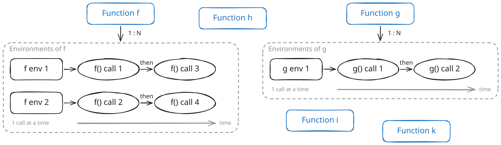
(This serial execution of invocations in its execution environment is the default in most FaaS offerings like AWS Lambda, although other offerings exist: Google Cloud Run offers concurrency of requests on the same execution environment. This blog assumes serial execution throughout.)
One of the leading challenges that must be tackled in serverless computing:
Cold start: The latency incurred when a function invocation requires a new execution environment to be created and initialized before execution.
Different levels of isolation for the sandbox: process based, container based and VM based.
Each level has different ways to tackle cold starts:
Industry uses VM-based isolation. Key components of this system:
KVM: The Linux kernel’s hypervisor component that runs guest vCPUs, handles EPT memory translation, and manages guest executionVMM: Virtual Machine Monitor: The userspace component that manages a VM, allocates and mmaps its RAM, runs one host thread to execute a vCPU, and emulates its devices.virtio: a standard for paravirtual devices that accelerates communication between the guest device and hypervisor. The guest driver and host device exchange buffers through virtqueues in shared memory and notify each other through a transport (PCIe emulation or MMIO).Note: Firecracker and other leading VMMs ditch PCIe entirely. Why? PCIe introduces complexity through device enumeration across multiple buses and dynamically allocated Base Address Registers (BARs), which define device memory and I/O regions. Managing this topology increases the complexity of the VMM’s device state.
EPT: Extended page table, maps guest physical to host physical.VM exit / VM entry: the CPU switching from the guest into KVM (exit) and back (entry).ioctl: A standard system call to send control commands and configuration parameters to kernel drivers through a file descriptor.virtqueue: a ring buffer in guest RAM that both the guest driver and the VMM read and write. The guest places requests on it, the VMM completes them and places replies back.EPT fault: the CPU exception raised when the guest accesses a guest physical address that the EPT (extended page tables) cannot translate. It causes a VM exit into KVM. There are two common causes:
QueueNotify): the address has no RAM behind it, so every access faults. Virtio uses this deliberately as a doorbell. The guest first queues many requests in the virtqueue using plain memory writes, which cause no exit. It then writes once to QueueNotify, which causes one EPT fault and tells the VMM to process the whole batch.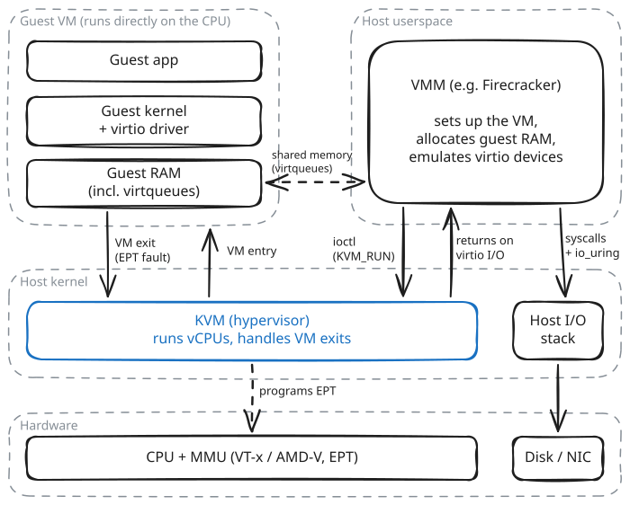
Throwback to OS 101, traditional boot up process: 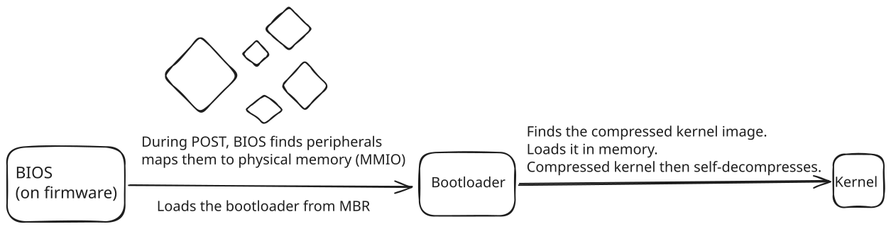
Why the traditional boot exists
Why a microVM doesn’t need it
Skipped entirely
This booting of microVMs directly from kernel image and root FS is called Direct Kernel Boot which is sub-second compared to traditional multisecond boots.
Before the guest runs (VMM)
vmlinux) into guest memory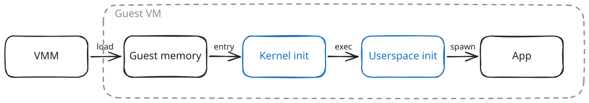
After the guest runs
ioeventfd region. If yes, KVM signals the associated eventfd. (VMM's io thread is alerted)Kernel init
Userspace init
Restore is different
Snapshot Restore: Can we take a snapshot after kernel and userspace is initialised and running already?
This way we can skip past the delay caused by kernel init and userspace init.
mmaps the memory file privately instead of copying itCold boot solved but latency added, can we fix this? (hint: Prefetching?)
*demand paging with MAP_PRIVATE: reads use file-backed pages but writes trigger CoW, creating a new private anonymous page with contents initialized with the file-backed page's contents. The snapshot file remains unaltered.
Snapshot restore so far assumed the memory file is sitting on the host. Scale that to serverless:
mmap maps a file into the address space, and the kernel's fault path reads pages from that file. A snapshot sitting in remote storage is not such a file.
Two ways out:
userfaultfdmmap + mincoreThe userfaultfd syscall in Linux lets a user-space program handle virtual memory page faults on its own instead of relying solely on the kernel.
for our problem this reduces to: mmap for pages that are not in a file on disk.
uffdh, not the kernel's file-backed pathuffdh is a seperate process (not part of the VMM)Overhead: uffdh only manages the contents of a page, the actual page allocation and copying of the contents is still made by kernel.
This means using userfaultfd leads to heavy context switching. (first from kernelspace to userspace for fault handling then userspace to kernelspace for actual allocation)
Fault path
userfaultfd-registered region and notifies the userspace handler uffdh.uffdh calls ioctl(UFFDIO_COPY) which transitions to kernelspace where kernel copies the contents, and updates the page tables.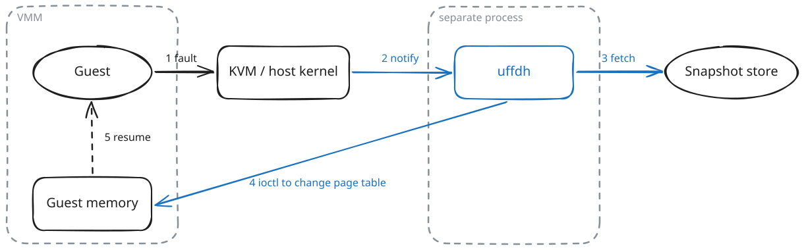
Still demand paging: one fault per page. So we prefetch.
userfaultfd its contents are treated as file-backed pages. Thus it's pages would go in host page cache in a naive setup. Serverless has different requirements.Record phase (first invocation)
uffdh serves every fault, so it sees every page the invocation touchesInvocation phase (later restores)
Why direct I/O? Serverless involves countless ephemeral functions, using page cache for all snapshots would pollute cache and lead to heavy thrashing
uffdh's userspace buffer into guest RAM.O_DIRECT, we bypass the host page cache, preventing cached snapshot pages from being reused across VMs.gap: I could not find a quantitative study evaluating the tradeoff of time saved by sharing vs time lost in page cache thrashing if we were to use O_DIRECT when choosing to use or not use O_DIRECT in serverless workloads
mincore: syscall answering which pages of this mapping are in RAM right now?
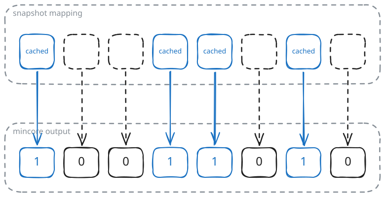
It is a snapshot taken after the fact:
Idea: don't intercept faults. The kernel's page cache already loads snapshot pages on demand, so use it to record and to prefetch.
mmap the snapshot and run one invocationWhy copy at all? In the snapshot, these pages are scattered across gigabytes, so reading them means many small random reads. Packed into one file, they take a few large sequential reads.
Goal: by the time the guest touches a working-set page, that page is already in RAM.
Plan: a background thread reads the whole WS file. It ignores the data; reading is just a way to pull the file's pages into the page cache.
How the page cache finds a page
The mismatch
WS file instead of snapshot file)mmap the WS file over the snapshot mapping, so each working-set page of guest memory is backed by its copy in the WS file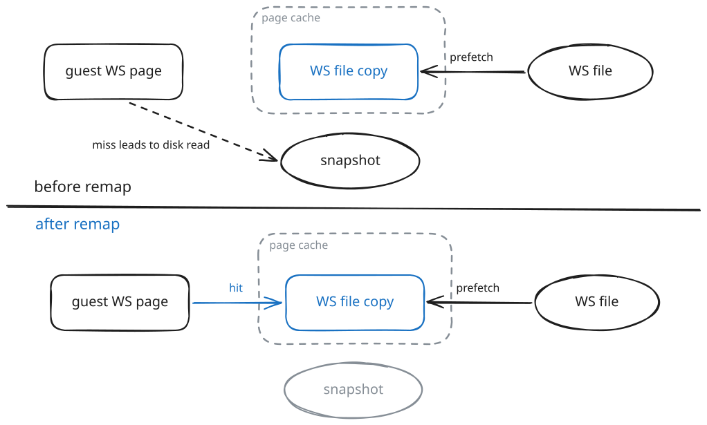
Bonus: the page cache belongs to the whole host, not to one process
mmap is for contiguous ranges?mmap maps one contiguous range to one contiguous range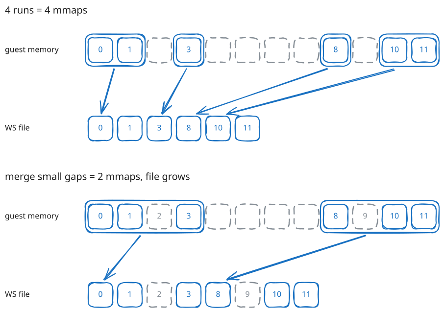
Better: record just which pages of the snapshot were loaded, as a list of page numbers. On restore, load exactly those pages from the snapshot file itself into the page cache.
No second file, no mmap juggling, and the page cache is still shared.
That needs a hook inside the kernel, at the point where pages enter the page cache. (hint: eBPF)
extended Berkeley Packet Filter
eBPF: small sandboxed programs you load into a running kernel, safely.
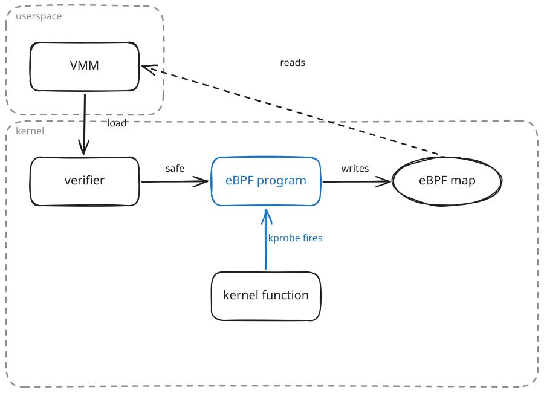
The hook SnapBPF uses: kprobe
kprobe: a hook on (almost) any kernel function.
SnapBPF hooks add_to_page_cache_lru, the function called every time a page enters the page cache.
Its arguments say:
This is exactly the point that the end of the previous section asked for.
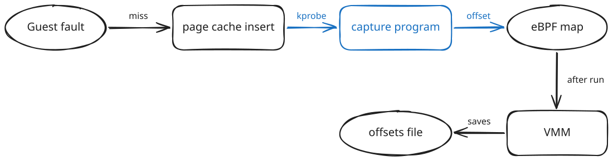
mmaped, the same as plain demand pagingReadahead is turned off during recording. Otherwise the kernel would also pull in neighbouring pages the guest never touched, and they would be recorded as working set.
What gets saved: a list of page numbers, a few KB in size, not copies of pages. There is no second copy of the working set.
Before any restore, the VMM prepares the saved offsets:
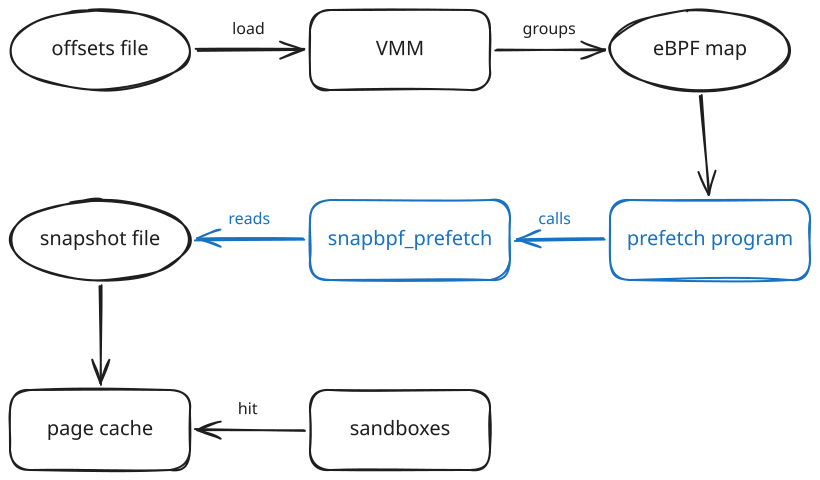
Pages are cached as (snapshot, pg N), which is exactly what the guest looks up. They are hits, with no remapping.
The verifier forbids an eBPF program from issuing disk reads or modifying the page cache.
snapbpf_prefetchSo the eBPF program decides what to read, and existing, trusted kernel code does the reading.
FaaSnap built a packed file to get sequential reads. SnapBPF reads directly from the snapshot, where working-set pages are spread out.
| userfaultfd (REAP, Faast) | mincore + mmap (FaaSnap) | eBPF (SnapBPF) | |
|---|---|---|---|
| Records in | userspace | userspace | kernel |
| Saved to disk | page copies | page copies (+ gaps) | page numbers only |
| Memory across sandboxes | one copy each | shared | shared |
| Extra mmaps | none | many | none |
Prefetching decides which snapshot pages to load early. There is a second question: should some pages not be loaded from the snapshot at all?
A guest memory access is translated twice:
After a restore, guest page N is backed by page N of the snapshot file. The first time the guest touches pg 500, the EPT has no entry for it, so KVM steps in and reads page 500 from the snapshot.
The key limit: KVM sees only the page number. It never sees why the guest touched it. (it could have been a fresh allocation malloc() call)
The guest touches a page for one of two reasons:
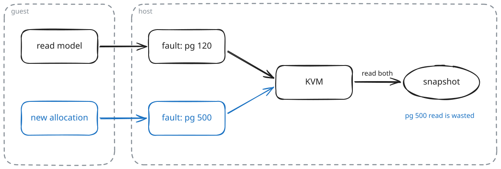
Both reach KVM as the same fault on a page number, so both get a disk read. For case 2, that read is pure waste on the critical path.
It also confuses the recording:
What KVM should do for case 2: hand the guest a zeroed page from host RAM, with no disk read. The hard part is knowing it is case 2.
For a fresh allocation the guest doesn't care what the page contains, since it will overwrite it. So why not hand over any spare page?
So "zeroed page" really just means a new page from host RAM instead of from the snapshot.
Both need the same answer: which pages of this snapshot are free memory? Those pages can then be served as zeroed pages instead of read from disk.
FaaSnap: make free pages recognisable
Faast: read the guest's free list
Costs of both
Paravirtualization (PV): modify the guest kernel so it knows it runs in a VM and cooperates with the host.
The problem is the channel
PV PTE marking
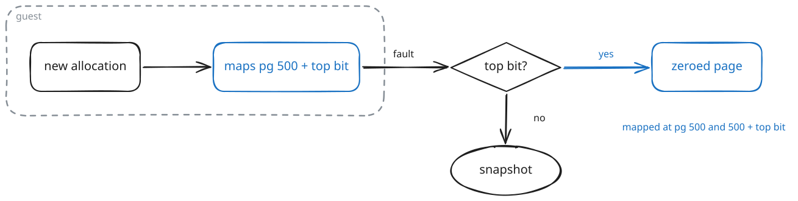
Net effect
One sandbox
10 concurrent sandboxes of one function
Which part helps which function
kfunc on the host, a KVM patch, and a modified guest kernel, which is a real cost to deploy.Serverless computing still has lots of room for optimisations that can be made and SnapBPF was a refreshing reminder of the same.
There is much more juice that can be squeezed out.
The rise of AI agents is accelerating demand for serverless computing, as autonomous workloads require scalable, on-demand compute to execute tasks in isolated environments. Exciting years ahead in serverless.